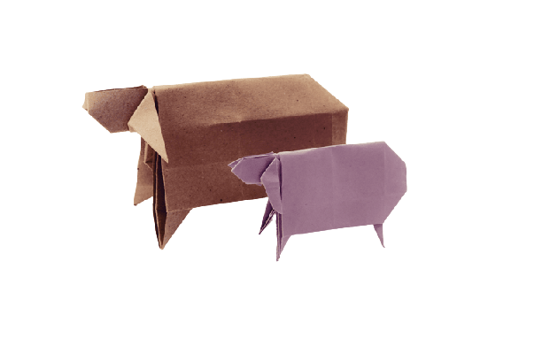
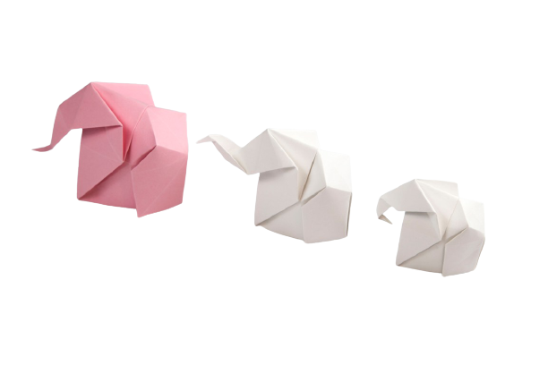

Origami Camel

Origami Teddy
- The teddy was named after President Theodore Roosevelt, after he refused to shoot a bear during a 1902 hunting trip
- The Teddy Bears’ Picnic song was originally called The Teddy Bear Two Step.
- A teddy bear is a stuffed toy in the form of a bear.

Origami Panda
- Pandas are "lazy" — eating and sleeping make their day.
- An adult can eat 12–38 kilos of bamboo per day!
- Giant pandas are good at climbing trees and can also swim.

Origami Chameleon
- CHAMELEON MAINLY CHANGE COLOR IN ORDER TO COMMUNICATE OR REGULATE BODY TEMPERATURE.
- THEIR FEET WORK LIKE SALAD TONGS.
- SKIN CRYSTALS ENABLE THEM TO CHANGE COLOR AT WILL.

Origami Cicadas
- Cicadas can survive a huge fall as babies, or nymphs. They are about the size of a grain of rice when they drop from a tree branch to the ground and start digging
- They improve lawns by digging tunnels that allow air into the soil.
- Their predators, or animals that will eat them, don’t know they’re coming.

Origami Pigeons
- Pigeons are incredibly complex and intelligent animals.
- Pigeons are highly sociable animals. They will often be seen in flocks of 20-30 birds.
- Pigeons have excellent hearing abilities. They can detect sounds at far lower frequencies than humans.

Origami sheep
- Sheep have an excellent sense of smell.They even have scent glands in front of their eyes and on their feethunting trip
- There are over 1000 distinct breeds of sheep worldwide.
- Sheep are highly social and smart animals.

Origami Elephant
- Elephant trunks have mad skills.Elephants have around 150,000 muscle units in their trunk.
- Elephants need up to 150kg of food per day.
- Elephants communicate throung vibrations.